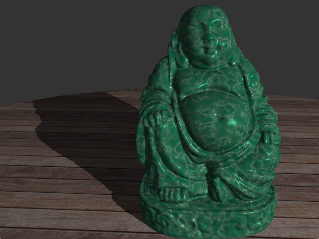
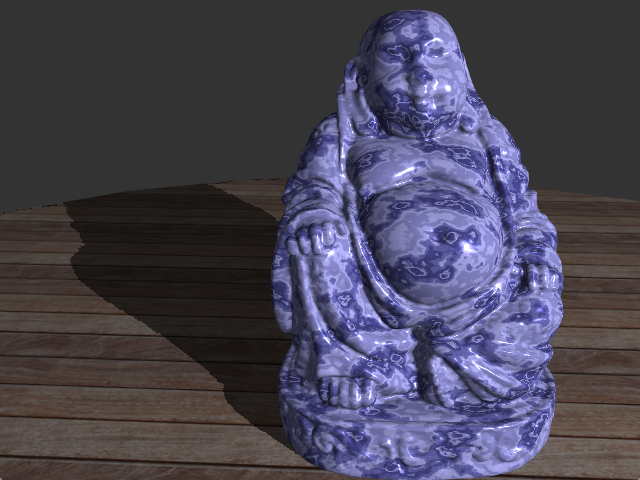

TP1 : Material models
- Source code
- GLSL specification
- OpenGL 4.4 API Quick Reference Card
- If you didn't follow last year's "Introduction to Computer Graphics" course, a short reminder on shaders and GLSL programing.
Getting started
First, clone the git repository.
Change working directory to GPGPU_TP. Create the Makefiles with: qmake-qt5, then compile the project with make. You can also use qtcreator if you prefere IDEs.
Compilation should produce a few warnings but no errors. Once it is done, start the program with ./viewer/myViewer. You should get the following picture. There is a single window, with the OpenGL display on the right, parameter controls on the left, and pull-down menus:
- File to load different models, textures or environment maps, and also save a screenshot.
- Window size to change the size of the window (dragging corners also works).
- Shaders to change the OpenGL shader that is active in the main window. Right now, all these shaders display the object vertex color, and nothing mode. Your work will be writing these shaders.
{kind=link}
Program structure
The GPGPU_TP folder contains:- trimesh2/, an auxiliary library in charge of loading 3D models and converting them into a format suitable for display. It can read files in ply, obj, 3ds, off formats, at least. You will find several models in viewer/models, but feel free to download others.
- viewer/ contains the main program code. Inside this folder, you will find:
- src/main.cpp, in charge of application starting and preparing menus.
- Files for the OpenGLWindow class, for creating a Qt window with an OpenGL context.
- Files for the GlShaderWindow class, which derives from OpenGLWindow. This is where the main action is. It loads the scene, loads the shaders, compiles them, sends parameters...
- The shaders/ directory contains all the shaders. The shader menu is built at launch time by reading the content of this directory. Shaders beginning with h_ are hidden, that is not displayed in this menu (this is for auxiliary shaders).
- The textures/ directory contains all the textures and environment maps. Feel free to add more textures if you want to.
- The models/ directory contains some 3D models to be used with the program. Feel free to add more.
Most of the time, the practicals requires you to edit and create shaders in the shaders/ directory. You might need to read the C++ code to know the variable names, and you can edit it to add sliders, radio buttons or colour selection. You will need to edit it for shadow mapping.
Blinn-Phong model with Fresnel and Textures
For starters, edit the 2_phong shader so it implements Blinn-Phong shading, with ambiant, diffuse and specular components.
In the vertex shader, you have three transformation matrix: matrix, perspective and normalMatrix. The first two do the conversion from world coordinates to screen coordinates, the last one does the same transformation for normals.
For each vertex, you have its position (vertex), its normal (normal) and its colour if it is defined (color). Uniform variables give the environment: light source position, intensity, which material model to use...
Your job is to compute local illumination, using the Blinn-Phong model. Make it as modular as possible, so you can reuse code in future works, and possibly #include functions shared with other shaders.
The first job is finding the local colour C. It can be either the vertex colour (if it exists) or the colour defined by the texture, or another colour (in future practicals, e.g. from the User Interface, or using procedural textures). Use the vertex colour for the main object, and the colour from the texture for the ground (but use shading functions for both).
The second job is to compute the variables you will need for local illumination: shading normal n⃗, vector to the light source L⃗, vector to the eye V⃗.
Once you have these, you can compute:
- Ambient lighting:
Ca=ka× C× I
where ka is the ambient reflection coefficient (you'll have to set it yourself) and I is the light intensity.
- Diffuse lighting:
Cd=kd× C× max(n⃗⋅L⃗,0)× I
with kd the diffuse reflection coefficient (again, you'll have to set it yourself).
- Specular lighting:
Cs=F(θd)× C× max(n⃗⋅H⃗,0)s× I
with the half-vector H⃗, defined as the normalized sum of V⃗ and L⃗:
H⃗=∥V⃗+L⃗∥V⃗+L⃗and where θd is the angle between H⃗ and L⃗. Remember that you should never use inverse trigonometric functions.
F is the Fresnel coefficient, which depends from the material index of refraction, η:
F(θ)=2Fs+Fpci(θ)=(η2−sin2θ)21Fs(θ)=∣∣∣∣cosθ+cicosθ−ci∣∣∣∣2Fp(θ)=∣∣∣∣η2cosθ+ciη2cosθ−ci∣∣∣∣2As a first step, work with a real η. In a second step, make it a complex number, with an imaginary component.
The object colour is Ca+Cd+Cs.
Cook-Torrance model
Once you have the Blinn-Phong model, extend it (in a modular way) so your program uses the Cook-Torrance model:
where F is the Fresnel term you have computed before (make sure it is in an auxiliary function!). D is the microfacet normal distribution. We'll use the GGX distribution:
The illumination should be different from Blinn-Phong. Use the boolean blinnPhong to switch between Blinn-Phong and Cook-Torrance. Use the shininess parameter for both methods.
Again, make sure the functions are well separated. Re-use code as much as possible, and anticipate having to re-use it.
If you want to do more...
If you have all the code working, here are things you can do:
- Implement a color picker, to let the user select the base color for the object (using Qt elements).
- Implement the Artist Friendly Metallic Fresnel (the author provides C++ code).
- Implement procedural textures using Perlin noise (using the functions provided in 7_noiseAlone). The procedural textures should change the local colour C. Try jade or marble.
|  |  |
| Jade | Marble |